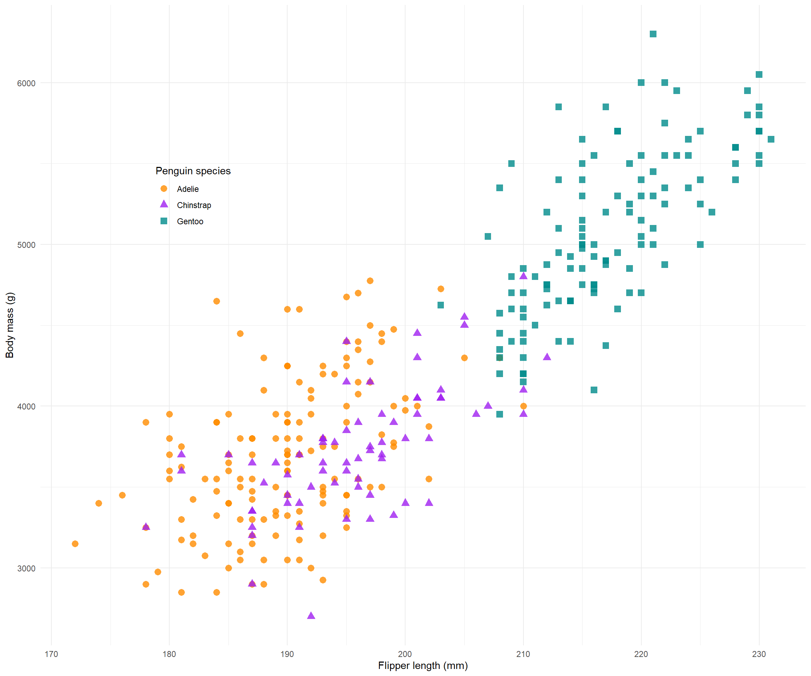

[1] 42Authoring collaborative research projects using Quarto
Quinn Asena
UW-Madison
2025-07-02
Quarto for collaborative research
why geek out on Quarto?
why I like Quarto
Uses markdown syntax
Accepts multiple programming languages
Outputs multiple formats (Word, PDF, HTML…)
Easy to learn and transfer skills from other languages
another thing to learn?
R Markdown and Jupyter also support multiple languages too…
You decide ï‚Ä¢ÃÅ·¥•‚Ä¢ÃÄ î„Å£
What you learn here is generalisable!

why collaborate via Quarto and Git?
Version control your projects
Generate a citable DOI and use for supplimentary information
Reproducibility: whole workflow from data to results in one place
Host a live link consistent with current results (no more copy paste 7 plots into a word doc each time you change something!)
Coding colaborators can contribute via a Git workflow
Communicate results to non-coding collaborators
How does it work? Commandline vs code editor:
- Quarto is commandline, and VS Code and RStudio are editors

Buckle up, ready your coding fingers!
today’s goals
Learn the necessary components of a Quarto document to publish an HTML
Publish an example link on GitHub
Have a working template you can use in the future
Know where to find help and useful resources
Zoom
Camera optional, but we love to see you (really, it helps me a lot!)
During exercises, give me a ✔️ when you are done or a ✋ if you need help
Drop questions in the Zoom chat or raise a hand at any time
first things first
It sometimes takes a minute for GitHub to host your repo, so let’s get this process underway.
GitHub
Go to the session repo
Fork the repository
Settings -> GitHub pages -> enable github pages
By default, your link will be hosted at: https://githubusername.github.io/reponame/pathtodocument.html
The repo can remain private if you have GitHub Pro (available to UoA students) but anyone who has the link can view it.
Let’s code!
We are using VS Code, R, and GitHub. If you have a preferred workflow like RStudio, Python, or GitKraken you can use them but may be harder to follow the session content. Afterall, Quarto is supposed to be flexible!
GitHub
Open up VS Code and navigate to the source control
- Clone https://github.com/username/resbaz2022
Open up the install.R and template.qmd files
- Run the install file, then render the template
elements of a Quarto file
YAML
Text
Code blocks
References file
scss (optional for style; won’t cover this!)
YAML
YAML exercise
Your Turn üíª :
YAML exersice
Open up the template.qmd and fill the
title:andname:andaffiliation:fieds.A couple of handy entries are already completed
The existing field:
date: todaywill automatically generate today‚Äôs date (cool huh? Õ°‚ñÄÃø Ãø‚ÄØÕú ñ Õ°‚ñÄÃø Ãø )
Add a table of contents following the guide
Render the document
Give me a ✔️ when done or a ✋ if you need help
text editing
Writing in Quarto uses markdown syntax
LaTeX is used to render PDFs so LaTeX commands can be used for PDF outputs
Look! I can do fancy maths: \(f_{c}=z^{2}+c\)
- ‚ñÄÃø Ãø‚ÄØÕú ñ Õ°‚ñÄÃø Ãø
Pro tip!
Render regularly. Small errors can be tricky to pick out long after they have been made.
You can change the defult so that the document renders on hitting save.
including a bibliography
Citations require:
a
.bibor.bibtexfile in your working directory (one is included for today)- The references file can be generated (and automatically sync) with Zotero and other reference managers.
a YAML entry pointing to the file
bibliography: refs.bib(if the file is named ‘refs.bib’)an optional
CSLfile specifying the format of the bibliography.- Useful for authoring articles as
CSLfiles are downloadable for specific journals
- Useful for authoring articles as
Pro tip!
There are alternative methods that do not require a local file, like CiteDrive.
in-text citations
Citing work in-text follows the @citekey format
@perkel2022= Perkel (2022)[@chamberlin1897; @perkel2022]= (Chamberlin 1897; Perkel 2022)Quarto, by default, inserts a formatted reference list at the end of the document so I put an empty ‘References’ header.
We won’t go deeper into citations for now as we are not authoring an article today. The link above has info for technical writing.
equations
Pretty, formatted equations can be inserted using the same syntax as in LaTeX. Inline equations (e.g., \(E = mc^2\)) are surrounded by a $ and equation bocks are surrounded by $$:
\[ N_{t+1} = N_t + r_{d}N_t \left(1- \frac{N_t}{K} \right) \]
handy features
The RStudio IDE has some handy features using the visual editor:
VS Code also has cool features:
markdown exercise
Your Turn üíª :
Markdown exercise
Check out Quarto’s markdown guide
In the template Introduction section take 3-4 minutes to write:
a sub-heading under the introduction
a list
and an equation
cite one of the articles in in existing
.bibfile using the@render the document and hit the ✔️ in zoom
code blocks
Code is executed when the document is rendered. Code blocks can also be executed individually just like regular R markdown if you are already familiar with that. Code blocks are inserted like this:
code block execution option
Code block execution options options are set with a special comment: #| (white space sensitive!). Block options determine how the code is executed, e.g., whether to display the code block: #| echo: true, warning messages #| warning: false, and to input captions #| fig-cap: "A really good figure caption!".
Pro tip!
Unlike R markdown, block options are lower case true/false and the comment #| must be followed by a space.
document level execution option
Execution options can also be set at the document level under the YAML entry execute::
execute:
echo: false
warning: false
format:
html:
fig-width: 8
fig-height: 6
pdf:
fig-width: 7
fig-height: 5inline code
Code can also be executed inline:
Inline code execution can be helpful referencing values in text like: there are nrow(data) observations in the data.
code exercise
Your Turn üíª :
Code block exercise
Check out the execution options and edit the existing code block options in the ‘Libraries section’ to:
exclude the results
exclude displaying the code (make sure it still evaluates!)
render the document and hit the ✔️ in zoom
cache
Cache keeps a record of outputs and only re-runs code chunks that have beed edited. Caching is useful for computations that take a long time and do not need to be re-run every time you render the document. Cache can be set at the document level using the YAML entry:
execute:
cache: trueor using the ececution option #| cache: true in an individual code block.
Nap time (not really…)!
Refil on tea, coffee, and cookies.
tables
Tables can be displayed using code: tables in R markdown; or markdown.
There are helpful ways of generating markdown tables online: Markdown table generator; and in RStudio.
An example of generating a table using R is coming up but we won’t go into R specifics today.
tabsets
Ok now the feature I find very useful: tabsets. Tabsets are great for showing, multiple results, data, code, whatever you want in tabs. Say, you want to show the plot on one tab and the model output table in the next, or multiple related plots. Much easier to read and flick among results than a long stream of plots and tables.
if (!require("pacman")) install.packages("pacman", repos="http://cran.r-project.org")
pacman::p_load(ggplot2, palmerpenguins) # Install & load packages
# From: https://allisonhorst.github.io/palmerpenguins/articles/examples.html
mass_flipper <- ggplot(data = penguins,
aes(x = flipper_length_mm,
y = body_mass_g)) +
geom_point(aes(color = species,
shape = species),
size = 3,
alpha = 0.8) +
scale_color_manual(values = c("darkorange","purple","cyan4")) +
labs(x = "Flipper length (mm)",
y = "Body mass (g)",
color = "Penguin species",
shape = "Penguin species") +
theme_minimal() +
theme(legend.position = c(0.2, 0.7),
plot.title.position = "plot",
)
tabset code
Your Turn üíª
Tabsets are created with the following syntax:
:::{.panel-tabset}
# Tab 1
content
# Tab 2
content
:::
Tabset exercise
Check out the tabset panel documentation
Create a tabset with three tabs in the template under the Tabsets heading
- Does not matter what they contain but feel free to blurb something in there
render the document and hit the ✔️ in zoom
images
Figures can be generated directly from code (as in the tabset panel demonstration) or inserted as files using the  syntax (for more details like multi-figure layot and alt text see: figures in Quarto).
Images exercise
There is a (royalty free) XKCD comic inside the images directory in the repo. using the syntax described above, insert the image into one of the tabsets you just created.
render the document and hit the ✔️ in zoom
let’g go Git it
You’re now ready to host your live link!
GitHub
Render your project so that most recent changes are exported
In the source control on the left commit and push your changes
- You can do this however you prefer, commandline, GUI, source control…
Find your hosted template link and share with the world!
Congrats you did it (‡∏á Õ°‚ùõ‚ÄØÕú ñ Õ°‚ùõ)‡∏á
how did I do?
Before you go! Please post in the chat:
a one up (a good thing)
and one down (a bad thing)
or email me at qasena@wisc.edu
References
Biostats - very useful resource for authoring documents in Quarto. This session draws from their content.
Awsome Quarto - a big list of Quarto things.
Chamberlin, T. C. 1897. “The Method of Multiple Working Hypotheses.” The Journal of Geology 5: 837–48.
Perkel, Jeffrey M. 2022. “Cut the Tyranny of Copy-and-Paste with These Coding Tools.” Nature 603 (7899): 191–92. https://doi.org/10.1038/d41586-022-00563-z.